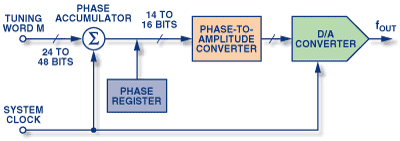
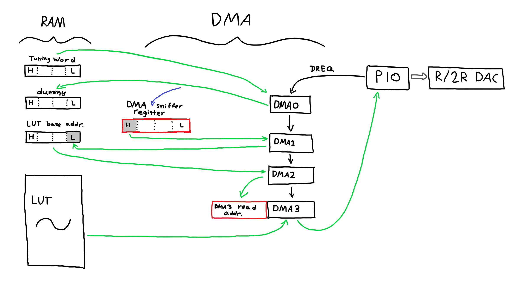
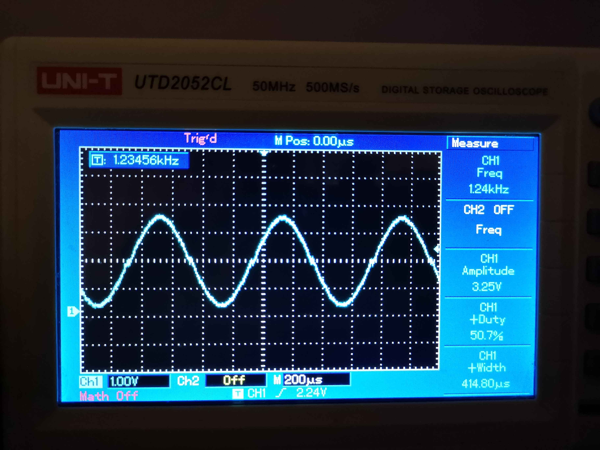

June 16, 2024
Direct digital synthesis is a method to generate analog waveforms of relatively accurate frequency. It has the benefit of being mostly digital, allowing relative freedom for the frequency and types of waveforms that we can generate.
There are numerous ICs that are designed to do this, and I am aware that this is not really a task best suited for microcontrollers, but in small quantities, many of these DDS ICs are more expensive than even relatively fast microcontrollers such as the RP2040.
Analog Devices has a nice article about what DDS is how it works, and (probably to sell their own DDS chips), the benefits it has over other methods.
They also include this diagram, among others.
From this, we can see the main parts of the DDS.
Now in RP2040 terms:
The first three are pretty straightforward.
The phase accumulator is somewhat more tricky. Ideally, this should run very fast, on the order of a few clock cycles, and ideally need to perform a 32 bit add accumulate. Somewhere around this I decided that I didn't want to use the CPU for some reason, so that leaves few options for the addition operation. The PIOs were the first to come to mind, but they really can't do much math at all. I have seen some other people using the hardware interpolators, but those are tied to the CPUs, so those were also not an option.
One feature that seems quite rarely used is the DMA's checksum calculator. These can perform a set of basic operations each clock cycle, and one of these included the basic add accumulate, which was perfect for this purpose.
I have a DMA channel (I will call it DMA0) read the 32 bit tuning word from RAM into a dummy location, and with the CRC sniffer enabled, this results in the tuning word being accumulated in the SNIFF_DATA register.
At this stage, if having a sawtooth wave is satisfactory, then you can just have DMA0 chain to another channel, DMA1, that reads from SNIFF_DATA, and writes it to the PIO TX fifo with a DREQ, and chain DMA1 back to trigger DMA0. This is relatively simple, and is perfectly fine for generating sawtooth waves. Keep in mind that these are 32 bit values, and you will probably need to truncate them to for them to be more useful.
However, I sort of wanted a sine wave, and that requires a lookup table. This ended up requiring another two DMA channels. In this configuration, DMA1 does not write to the PIO, but rather takes the most significant byte of the SNIFF_DATA register, and copies it to the least significant byte of a 32 bit variable (in RAM) that is a pointer to a 256 element, 8 bit, 256 byte aligned lookup table. This has the implication that it avoids needing another addition operation, to add the SNIFF_DATA value to the LUT base address. DMA1 then triggers another, DMA2.
(if you were wondering if you could skip out on using DMA2, editing the LUT address directly in DMA3's read address register, that doesn't seem to work; it overwrites more than just the LSB)
DMA2 simply copies the 32 bit address variable into the read address of DMA3, triggering it in the process. DMA3 then retriggers DMA0 when it finishes, completing the cycle.
Heres some of the code to do this.
#include "DDS.h" #include "hardware/pio.h" #include "R2RDAC.pio.h" #include "math.h" /* The following happens every time the PIO DREQ's from the DMA. The basic idea: Use the DMA's CRC sniffer in accumulate mode as the phase accumulator. Then use this with a lookup table to synthesize an accurate frequency. Preload lut_address high bytes with the address of lut[0] DMA0: sniffer enabled, copy increment to dummy, trigger DMA1 DMA1: copy SNIFF_DATA(high byte only) to address(low byte), trigger DMA2 DMA2: copy address into DMA3 read address, trigger DMA3 DMA3: copy into PIO, retrigger DMA0 The PIO implementation is very crude and may break when not using PIO0 SM0. Please ensure it works in your application before using. wiring: connect a resistor ladder DAC circuit to GPIO 0-8, with 8 being the MSB. */ // ======================= DMA ======================= // uint dma0_chan; uint dma1_chan; uint dma2_chan; uint dma3_chan; dma_channel_config dma0_cfg; dma_channel_config dma1_cfg; dma_channel_config dma2_cfg; dma_channel_config dma3_cfg; volatile uint32_t increment = 1; volatile uint32_t dummy; volatile uint8_t lut[256] __attribute__((aligned(256 * sizeof(uint8_t)))); volatile uint32_t lut_address; // ======================= PIO ======================= // uint sm; const float clkdiv = 9; // 9 seems to be the fastest it can go :/ uint dac_offset; // ======================= MISC ====================== // uint32_t dds_clock; void InitDDS(uint32_t clockFreq) { // ======================= MISC ====================== // dds_clock = clockFreq / (2 * clkdiv); for (int i = 0; i < 256; i++) { lut[i] = (cos((float) i * 2 * 3.14159f / 256.0f) + 1.0f) * 127; } // ======================= PIO ======================= // dac_offset = pio_add_program(pio0, &R2RDAC_program); sm = pio_claim_unused_sm(pio0, true); R2RDAC_program_init(pio0, sm, dac_offset, clkdiv); pio_sm_set_enabled(pio0, sm, true); // ======================= DMA ======================= // dma0_chan = dma_claim_unused_channel(true); dma0_cfg = dma_channel_get_default_config(dma0_chan); dma1_chan = dma_claim_unused_channel(true); dma1_cfg = dma_channel_get_default_config(dma1_chan); dma2_chan = dma_claim_unused_channel(true); dma2_cfg = dma_channel_get_default_config(dma2_chan); dma3_chan = dma_claim_unused_channel(true); dma3_cfg = dma_channel_get_default_config(dma3_chan); // DMA0 config channel_config_set_transfer_data_size(&dma0_cfg, DMA_SIZE_32); channel_config_set_read_increment(&dma0_cfg, false); channel_config_set_write_increment(&dma0_cfg, false); channel_config_set_sniff_enable(&dma0_cfg, true); channel_config_set_chain_to(&dma0_cfg, dma1_chan); channel_config_set_dreq(&dma0_cfg, DREQ_PIO0_TX0); channel_config_set_enable(&dma0_cfg, true); channel_config_set_irq_quiet(&dma0_cfg, true); dma_sniffer_enable(dma0_chan, DMA_SNIFF_CTRL_CALC_VALUE_SUM, true); // DMA1 config channel_config_set_transfer_data_size(&dma1_cfg, DMA_SIZE_8); channel_config_set_read_increment(&dma1_cfg, false); channel_config_set_write_increment(&dma1_cfg, false); channel_config_set_chain_to(&dma1_cfg, dma2_chan); channel_config_set_enable(&dma1_cfg, true); channel_config_set_irq_quiet(&dma1_cfg, true); // DMA2 config channel_config_set_transfer_data_size(&dma2_cfg, DMA_SIZE_32); channel_config_set_read_increment(&dma2_cfg, false); channel_config_set_write_increment(&dma2_cfg, false); channel_config_set_enable(&dma2_cfg, true); channel_config_set_irq_quiet(&dma2_cfg, true); // DMA3 config channel_config_set_transfer_data_size(&dma3_cfg, DMA_SIZE_8); channel_config_set_read_increment(&dma3_cfg, true); channel_config_set_write_increment(&dma3_cfg, false); channel_config_set_chain_to(&dma3_cfg, dma0_chan); channel_config_set_enable(&dma3_cfg, true); channel_config_set_irq_quiet(&dma3_cfg, true); lut_address = (uint32_t) lut; // this is the "preloading" I speak of dma_channel_configure( // writes increment to dummy, CRC summation mode; is sniffed to DMA_BASE + 0x438 dma0_chan, &dma0_cfg, &dummy, &increment, 1, false ); dma_channel_configure( // reads high byte from sniffer and writes it to the low byte of lut_address dma1_chan, &dma1_cfg, //&dma_hw->ch[dma2_chan].read_addr, &lut_address, (const volatile int*)(DMA_BASE + 0x438 + 3), // about the +3: we are reading the most significant 8 bits of the SNIFF_DATA register. // this effectively sets the phase accumulator resolution. +3 means a 32 bit phase accumulator, truncated down to 8 bits. +2 --> 24 bit, etc. 1, false ); dma_channel_configure( // writes lut_address to read address of dma3 dma2_chan, &dma2_cfg, &dma_hw->ch[dma3_chan].al3_read_addr_trig, &lut_address, 1, false ); dma_channel_configure( dma3_chan, &dma3_cfg, pio0->txf, &dummy, // this is irrelevant (DMA2 overwrites this) 1, false ); dma_channel_start(dma0_chan); } uint32_t ChangeDDSFreq(double requestedFreq) { // See https://www.analog.com/en/resources/analog-dialogue/articles/all-about-direct-digital-synthesis.html // Fo = M * Fclock / (2^n) | n = 32 increment = round(pow(2, 32) * requestedFreq / (double) dds_clock); return (uint64_t) increment * dds_clock / ((uint64_t) 1 << 32); }
The full code can be found on the github page.
This system uses a 256 long, 8 bit LUT for storing the waveforms, using a 32 bit phase register truncated down to 8 bits.
The convoluted, 4 DMA chain takes quite a bit of time to run. The PIO clock divider has to be 9 or greater, and the PIO itself further divides the frequency in half. In the end, the effective DDS sample rate is the system clock divided by 18.
With a system clock of 125 MHz, the sample rate is only about 6.9 MHz, which is rather low, resulting in crappy waveforms at higher frequencies. However, at the 32 bit phase register in theory allows a frequency accuracy of 0.0016 Hz, which makes it extremely good at ensuring that the actual frequency is very accurate. At low frequencies, the waveform is a very clean sine wave.
(The distortion in the middle is due to the fact that my R/2R DAC isn't actually R and 2R, since I used 150Ω and 330Ω resistors, and I only connected like 5 of the 8 bits available).
To conclude, this DDS can generate frequencies up to a few MHz with 0.0016 Hz resolution, and is quite good at low frequencies. It is completely independant of the CPU when running, and only uses it to set up. It certainly has room for improvement, especially in terms of sample rate, and in the future, I might try just using one of the CPU cores to speed things up.